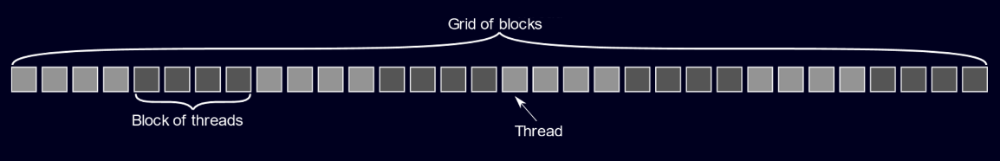

HIP and HIPFort Basics
As with every GPU programming API, we need to know how to
- Allocate and de-allocate GPU memory
- Copy memory from host-to-device and device-to-host
- Expose algorithm parallelism to the GPU hardware
- Execute code on the GPU.
Memory Management with HIP and HIPFort is handled by using the HIP and HIPFort APIs. Computational kernels (functions) are written using C syntax. HIP intrinsics allow you to identify individual threads executing the kernel so that you can assign per-thread instructions; this provides the necessary ingredients for exposing application parallelism. Kernels are scheduled to run on the GPU using the HIP API or CUDA-style "chevron syntax". This section covers these basics of GPU programming with HIP and HIPFort.
Managing Memory
When working on GPU accelerated platforms, recall that the CPU and GPU have distinct memory spaces. This implies that your software must somehow manage host (CPU) and device (GPU) pointers to data. The HIP API provides functions that can be used to allocate memory, deallocate memory, and copy memory between the host and device.
Allocate memory
To allocate memory on the GPU, you can use the hipMalloc call.
C/C++
|
| Allocate device memory in C/C++. As input, hipMalloc expects a pointer and the number of bytes to allocate, in that order. |
Fortran
|
| Allocate device memory in Fortran. As input, hipMalloc expects a pointer (either of `TYPE(C_PTR)` or a Fortran `POINTER`) and the number of bytes to allocate, in that order. The output of hipMalloc is an integer exit code. |
Optional arguments in Fortran
Since Fortran allows for multi-dimensional arrays that most Fortran programmers leverage in their application, it can become cumbersome to pollute your code with boilerplate calculations for size in calls to hipMalloc. To help keep your code tidy, hipMalloc in hipfort provides optional parameters : mold and source. These arguments expect to receive a Fortran POINTER that references host memory. The amount of memory to allocate on the GPU is then determined based on the amount of memory held by the host pointer.
When the mold argument is provided, memory is simply allocated on the GPU.
USE hipfort
IMPLICIT NONE
INTEGER, PARAMETER :: N = 100
INTEGER, PARAMETER :: M = 500
REAL,POINTER :: a_cpu(:,:)
REAL,POINTER :: a_gpu(:,:)
INTEGER :: ierr
ALLOCATE(a_cpu(1:N,1:M))
! Allocate the gpu counterpart of a_cpu
ierr = hipMalloc( a_gpu, mold = a_cpu )
If you specify the source, memory is allocated on the GPU and the contents of the host pointer are copied to the GPU.
USE hipfort
IMPLICIT NONE
INTEGER, PARAMETER :: N = 100
INTEGER, PARAMETER :: M = 500
REAL,POINTER :: a_cpu(:,:)
REAL,POINTER :: a_gpu(:,:)
INTEGER :: ierr
ALLOCATE(a_cpu(1:N,1:M))
a_cpu = 0.0
! Allocate the gpu counterpart of a_cpu and copy
! the contents of a_cpu to the GPU
ierr = hipMalloc( a_gpu, source = a_cpu )
Deallocate memory
To deallocate memory on the GPU, you can use the hipFree call.
C/C++
|
| Deallocate device memory in C/C++. As input, hipFree expects a pointer referencing memory previously allocated on the GPU. |
Fortran
|
| Deallocate device memory in Fortran. As input, hipMalloc expects a pointer referencing memory previously allocated on the GPU. The output of hipFree is an integer exit code. |
Copying memory
Because distinct pointers are used to reference memory held on the host or device, it is possible that host and device pointers have different data. For example, if data is allocated on both the host and device and you read data from a file into the host pointer, then the device pointer points to memory that does not contain the same data as the host pointer. To run a kernel on the GPU that uses this data, you would need to copy data from the host pointer to the device pointer.
In general, it is your responsibility to explcitly copy data between the host and device when data is needed on either the host or device. To copy data, you can use the hipMemcpy function
C/C++
|
| Copy data between the host and device in C/C++. As input, `hipMemcpy` expects a pointer to the destination address, a pointer to the source address, the amount of data (in bytes) that you want to copy, and an enumerator indicating directionality. The enumerator is `hipMemcpyHostToDevice` or `hipMemcpyDeviceToHost`. |
Fortran
|
| Copy data between the host and device in C/C++. As input, `hipMemcpy` expects a pointer to the destination address, a pointer to the source address, the amount of data (in bytes) that you want to copy, and an enumerator indicating directionality. The enumerator is `hipMemcpyHostToDevice` or `hipMemcpyDeviceToHost`. |
Writing Kernels
Syntax
A HIP kernel is a __global__ void function written using C syntax. All array arguments are usually passed by reference and scalar values are often passed by value. The __global__ declaration specifier indicates that the HIP kernel can be called from either the host or the device and it executes on the device.
In general, the decalaration of a HIP kernel will look like
#include <hip/hip_runtime.h>
// This kernel can be called from the host or another GPU kernel
__global__ void myfunc( args ){
}
You can also use a __device__ void function, which is a HIP kernel that can only be called from the device and it executes on the device.
#include <hip/hip_runtime.h>
// This kernel can only be called from another GPU kernel
__device__ void myfunc( args ){
}
Working with many threads
GPUs are capable of executing thousands of threads simultaneously. Recall that AMD GPU hardware organizes components into many compute units, each of which process groups of threads (wavefronts) each clock cycle. The HIP programming model describes threads using a similar hierarchy. Specifically, threads are organized into blocks of SIMT threads that form a computational grid. Blocks are limited in size, typically to 1024 threads per block.
|  |
| Figure 1 : A conceptual diagram depicting the grouping of threads into blocks. |
{kind=link}
For convenience, blocks and grids can be defined in 1D, 2D, or 3D. This is a particularly useful feature that can simplify exposing parallelism of applications with loops and tightly nested loops. When writing a GPU kernel, you are given access to intrinsics that allow you to calculate thread addresses. Typically memory addressing is calculated from thread addresses so that you can expose parallelism in your application.
You can obtain the local thread id (the thread id within a block) using the threadIdx.x intrinsic. If you are using multi-dimensional blocks, you can also use threadIdx.y and threadIdx.z .
#include <hip/hip_runtime.h>
__global__ void myfunc( args ){
size_t i = threadIdx.x;
size_t j = threadIdx.y;
size_t k = threadIdx.z;
}
You can obtain the block id using the blockIdx.x intrinsic; similarly, the blockIdx.y and blockIdx.z can be used for multi-dimensional grids.
#include <hip/hip_runtime.h>
__global__ void myfunc( args ){
size_t bidx = blockIdx.x;
size_t bidy = blockIdx.y;
size_t bidz = blockIdx.z;
}
In addition to intrinsics for thread and block Id’s, you can also obtain block and grid dimensions.
#include <hip/hip_runtime.h>
__global__ void myfunc( args ){
size_t bdimx = blockDim.x;
size_t bdimy = blockDim.y;
size_t bdimz = blockDim.z;
size_t gdimx = gridDim.x;
size_t gdimy = gridDim.y;
size_t gdimz = gridDim.z;
}
Example : Array Addition
Let's take a look at a simple example, starting with the host-side code
float *a, *b, *c;
int N=1000;
a = (float*)malloc(N*sizeof(float));
b = (float*)malloc(N*sizeof(float));
c = (float*)malloc(N*sizeof(float));
...
for(int i=0; i<N; i++){
c[i] = a[i] + b[i];
}
free(a);
free(b);
free(c);
In this very simple example, we have three arrays a, b, and c that are all of size N. Once the arrays are allocated and initialized (initialization occurs in the ... space), each element of a is added to each element of b and the result is stored in each element of c. On the host, this operation is expressed in a for loop, with i varying from 0 up to N-1, in unit increments.
On the GPU, we can execute multiple levels of the loop concurrently. When we launch a GPU kernel, many GPU threads will concurrently run the HIP kernel and each GPU thread is given its own value for threadIdx.x and blockIdx.x. Using these intrinsics, along with the number of threads within each block (blockDim.x), we can calculate a unique "global" thread ID for each GPU thread
size_t tid = threadIdx.x + blockIdx.x*blockDim.x;
The threadIdx.x gives us the "local thread ID", which varies between 0 and blockDim.x-1. The blockIdx.x varies between 0 and the number of blocks (minus one), so that the maximum unique thread ID is gridDim.x-1. It's possible that the size of the array N is greater than the maximum unique thread ID. In this case, each thread still needs to execute a for loop for our array addition problem. For example, if N=1000 and we have 100 total threads (gridDim.x=100), then
- thread ID 0 can compute
c[0] = a[0]+b[0], - thread ID 1 can compute
c[1] = a[1]+b[1], - ...
- thread ID 99 can compute
c[99] = a[99]+b[99],
Once we reach the 100th entry of the array, we can return back to assigning more work to thread 0
- thread ID 0 can compute
c[100] = a[100]+b[100], - thread ID 1 can compute
c[101] = a[101]+b[101], - ...
- thread ID 99 can compute
c[199] = a[199]+b[199],
If we continue this pattern, we see that
- thread ID 0 computes elements
(0,100,200,300,...,900) - thread ID 1 computes elements
(1,101,201,301,...,901) - ...
- thread ID 99 computes elements
(99,199,299,399,...,999)
In general, each thread computes a subset of the array sums. Each thread starts with the array element corresponding to its thread ID and strides in step sizes corresponding to the total number of threads. This can be summarized in the following kernel
#include <hip/hip_runtime.h>
__global__ void vecadd(float *a, float *b, float *c, int N){
size_t tid = threadIdx.x + blockIdx.x*blockDim.x;
size_t stride = gridDim.x;
for(int i = tid; i < N; i += stride){
c[i] = a[i] + b[i];
}
Launching Kernels
Up to this point, we've describe how to write kernels and you may be asking how we launch kernels and how we can specify the number of threads per block and the number of blocks. Here, we'll talk specifically about how to launch __global__ kernels that are launched from the CPU and run on the GPU.
HIP allows you to launch kernels using the CUDA “chevron syntax” to specify the number of threads per block and the number of blocks.
#include <hip/hip_runtime.h>
myfunc<<<BlockPerGrid, ThreadPerBlock>>>( args );
Note
The chevron syntax also supports optional parameters that specify the GPU stream (for ansynchronous kernel launches), and the amount of shared memory to allocate per block. Learning when and how to use these optional parameters will be discussed in a later section.
Remember, when a kernel is launched on the GPU it is executed by many threads running in parallel. Threads are organized into groups called "thread-blocks" or simply "blocks" and blocks are organized into a "grid". Threads within the same block are active on the GPU at the same time, share the same compute unit, and can synchronize operations and communicate through shared memory.
Under the hood, blocks are executed in discrete "wavefronts" (AMD) or "warps" (Nvidia). A wavefront/warp is a fixed size group of threads that execute in lockstep; they run the same instructions and follow the same control-flow path in a Same-Instruction-Multiple-Thread (SIMT) fashion.
Note
On AMD GPUs, wavefronts consist of 64 SIMT threads and up to 16 wavefronts (1024 threads) are allowed per block.
On Nvidia GPUs, warps consist of 32 SIMT threads and up to 32 warps (1024 threads) are allowed per block
Example : Array Addition (Continued)
For the array addition example, we now have the necessary ingredients to move our host operations to the GPU. First, we will add in declarations for device pointers for a, b, and c.
float* a_dev, b_dev, c_dev;
hipMalloc(a_dev, N*sizeof(float));
hipMalloc(b_dev, N*sizeof(float));
hipMalloc(c_dev, N*sizeof(float));
Next, we'll add calls to hipMemcpy to move data held by a and b to their corresponding device pointers before launching the vecAdd HIP kernel.
hipMemcpy(a_dev, a, N*sizeof(float), hipMemcpyHostToDevice);
hipMemcpy(b_dev, b, N*sizeof(float), hipMemcpyHostToDevice);
Then, we'll launch the HIP kernel and copy the device data for c from the GPU. Here, we'll hard-code the threads per block to 256 (4 wavefronts) and calculate the number of blocks so that the max thread ID is greater than or equal to N
dim3 threads = (256,1,1);
dim3 blocks = (N/256+1,1,1);
vecadd<<< blocks, threads >>>( a_dev, b_dev, c_dev, N );
hipMemcpy(c, c_dev, N*sizeof(float), hipMemcpyDeviceToHost);
Putting all of this together and adding in clean up of device memory, the GPU accelerated version of this code looks like the following
float *a, *b, *c;
int N=1000;
a = (float*)malloc(N*sizeof(float));
b = (float*)malloc(N*sizeof(float));
c = (float*)malloc(N*sizeof(float));
// Allocate device memory
float* a_dev, b_dev, c_dev;
hipMalloc(a_dev, N*sizeof(float));
hipMalloc(b_dev, N*sizeof(float));
hipMalloc(c_dev, N*sizeof(float));
// Host array initialization
...
// Copy host data to the device
hipMemcpy(a_dev, a, N*sizeof(float), hipMemcpyHostToDevice);
hipMemcpy(b_dev, b, N*sizeof(float), hipMemcpyHostToDevice);
// Launch the kernel
dim3 threads = (256,1,1);
dim3 blocks = (N/256+1,1,1);
vecadd<<< blocks, threads >>>( a_dev, b_dev, c_dev, N );
// Copy device data for c back to the host
hipMemcpy(c, c_dev, N*sizeof(float), hipMemcpyDeviceToHost);
free(a);
free(b);
free(c);
hipFree(a_dev);
hipFree(b_dev);
hipFree(c_dev);
Try it yourself in our codelab
Building a basic GPU accelerated application with HIP in C/C++
Launching kernels from Fortran
The ISO C Binding module provides the necessary components to enable Fortran-C interoperability. To call HIP kernels in Fortran, you will need to do the following Write the GPU accelerated HIP kernel in C++. Write a wrapper routine in C++ that launches the HIP kernel. Define a subroutine interface block in Fortran that binds to the wrapper routine in C++.
Example As an example, suppose that you want to offload the following Fortran subroutine to the GPU with HIP.
SUBROUTINE VecAdd( a, b, c, N ) IMPLICIT NONE INTEGER, INTENT(in) :: N REAL, INTENT(in) :: a(1:N), b(1:N) REAL, INTENT(out) :: c(1:N)
DO i = 1, N
c(i) = a(i) + b(i)
ENDDO
END SUBROUTINE VecAdd
To offload to the GPU, you will first need to write the equivalent HIP kernel in C++, global void VecAdd_HIP(float a, float b, float c, int N) { int i = threadIdx.x + blockIdx.xblockDim.x; if (i<N) { c[i] = a[i] + b[i]; } }
Then, you will write a wrapper routine in C++ that launches this kernel
extern “C”
{
void VecAdd_HIPWrapper(float a, float b, float c, int N) {
VecAdd_HIP<<
In your Fortran source code, usually a module, you will add a subroutine interface block to expose the C++ wrapper routine to Fortran INTERFACE SUBROUTINE VecAdd_HIPWrapper(a, b, c, N) bind(c,name="VecAdd_HIPWrapper") USE ISO_C_BINDING IMPLICIT NONE TYPE(c_ptr) :: a, b, c INTEGER, VALUE :: N END SUBROUTINE VecAdd_HIPWrapper END INTERFACE
Once these three components are defined, you can then launch the GPU accelerated kernel from Fortran by simply calling VecAdd_HIPWrapper.
In the next section of this codelab, you will use these three steps to offload the ApplySmoother routine to the GPU.